Zilong Chen
Ph.D. Candidate · Tsinghua University
multimodal generation · world model
I am a Ph.D. candidate at the Department of Computer Science and Technology, Tsinghua University, advised by Prof. Huaping Liu and working closely with Dr. Feng Wang and Prof. Yikai Wang. Before Tsinghua, I completed my undergraduate studies at Xi'an Jiaotong University under Prof. Minnan Luo, focusing on knowledge graphs and their applications in natural language processing.
News
- Mar 2025MeshGen accepted to CVPR 2025 as a Highlight.
- Jan 2025V3D accepted to T-PAMI.
- Sep 2024Vidu4D accepted to NeurIPS 2024.
- Feb 2024GSGEN and GaussianEditor accepted to CVPR 2024.
- Sep 2023MSTH accepted to NeurIPS 2023 as a Spotlight.
Selected publications [full list] · * equal contribution
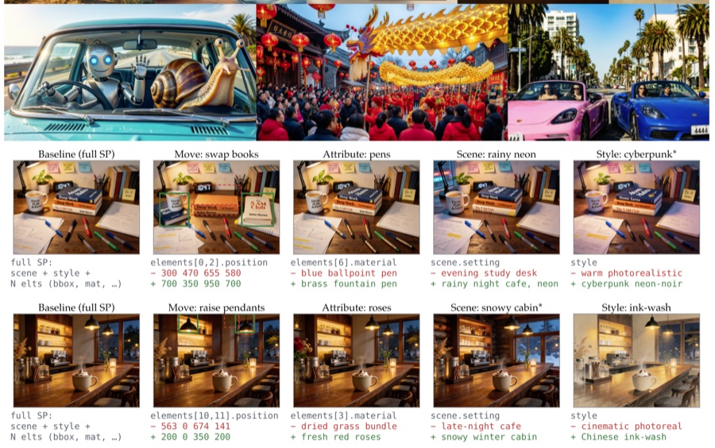
Scaling Properties of Text Conditioning in Visual Generation

bibtex
@InProceedings{chen2026textprompt,
author = {Zilong Chen and Chaorui Deng and Kunchang Li and Hongyi Yuan and Haoqi Fan},
title = {Scaling Properties of Text Conditioning in Visual Generation},
booktitle = {Technical Report, ByteDance Seed},
year = {2026},
}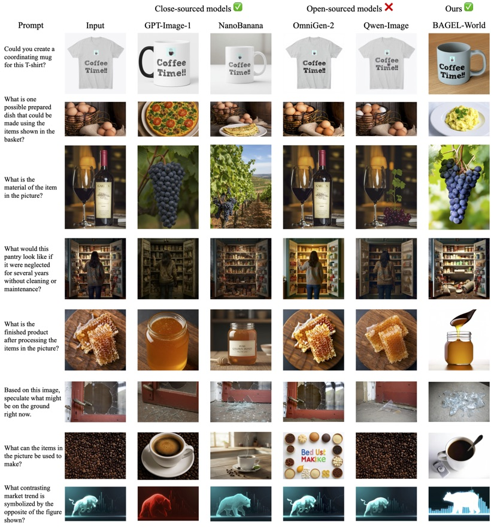
VQ-VA World: Towards High-Quality Visual Question-Visual Answering
Chenhui Gou*, Zilong Chen*, Zeyu Wang*, Feng Li, Deyao Zhu, Zicheng Duan, Kunchang Li, Chaorui Deng, Hongyi Yuan, Haoqi Fan, Cihang Xie, Jianfei Cai, Hamid Rezatofighi
bibtex
@InProceedings{gou2026vqvaworld,
author = {Chenhui Gou and Zilong Chen and Zeyu Wang and Feng Li and Deyao Zhu and Zicheng Duan and Kunchang Li and Chaorui Deng and Hongyi Yuan and Haoqi Fan and Cihang Xie and Jianfei Cai and Hamid Rezatofighi},
title = {VQ-VA World: Towards High-Quality Visual Question-Visual Answering},
booktitle = {CVPR},
year = {2026},
}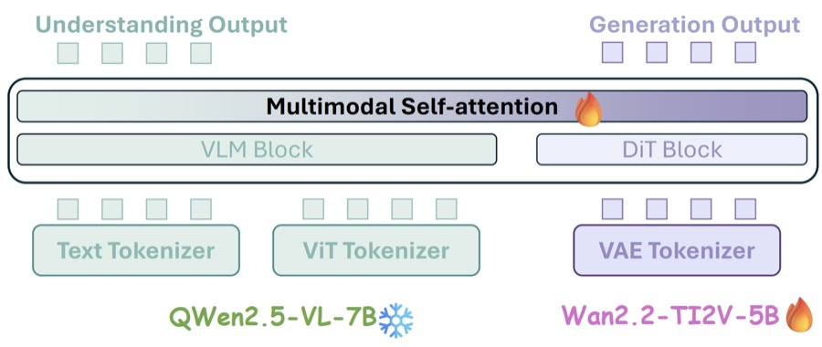
LightFusion: A Light-weighted, Double Fusion Framework for Unified Multimodal Understanding and Generation
Zeyu Wang*, Zilong Chen*, Chenhui Gou*, Feng Li, Chaorui Deng, Deyao Zhu, Kunchang Li, Weihao Yu, Haoqin Tu, Haoqi Fan, Cihang Xie
bibtex
@InProceedings{wang2026lightfusion,
author = {Zeyu Wang and Zilong Chen and Chenhui Gou and Feng Li and Chaorui Deng and Deyao Zhu and Kunchang Li and Weihao Yu and Haoqin Tu and Haoqi Fan and Cihang Xie},
title = {LightFusion: A Light-weighted, Double Fusion Framework for Unified Multimodal Understanding and Generation},
booktitle = {ECCV},
year = {2026},
}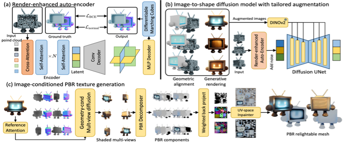
MeshGen: Generating PBR Textured Mesh with Render-Enhanced Auto-Encoder and Generative Data Augmentation

bibtex
@InProceedings{chen2025meshgen,
author = {Zilong Chen and Yikai Wang and Wenqiang Sun and Feng Wang and Yiwen Chen and Huaping Liu},
title = {MeshGen: Generating PBR Textured Mesh with Render-Enhanced Auto-Encoder and Generative Data Augmentation},
booktitle = {CVPR},
year = {2025},
}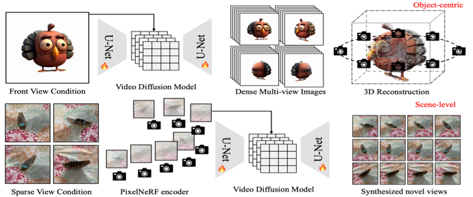
V3d: Video diffusion models are effective 3d generators

bibtex
@InProceedings{chen2024v3d,
author = {Zilong Chen and Yikai Wang and Feng Wang and Zhengyi Wang and Huaping Liu},
title = {V3d: Video diffusion models are effective 3d generators},
booktitle = {T-PAMI},
year = {2025},
}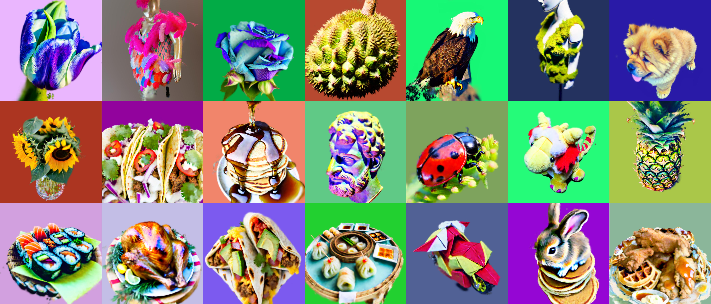
Text-to-3d using gaussian splatting

bibtex
@InProceedings{chen2023text,
author = {Zilong Chen and Feng Wang and Yikai Wang and Huaping Liu},
title = {Text-to-3d using gaussian splatting},
booktitle = {CVPR},
year = {2024},
}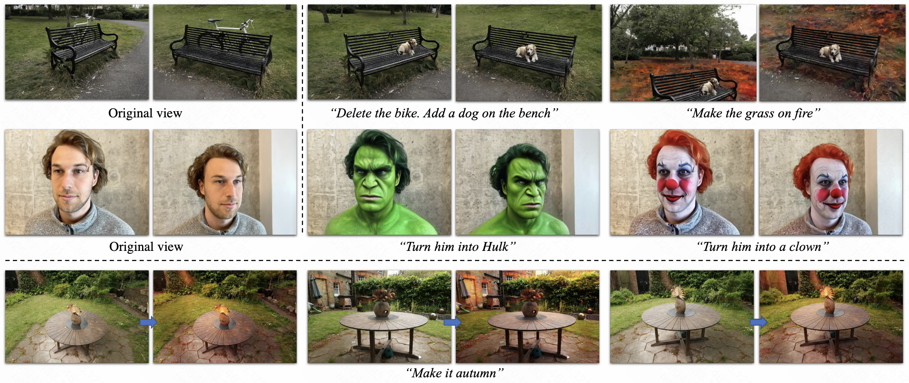
Gaussianeditor: Swift and controllable 3d editing with gaussian splatting
Yiwen Chen*, Zilong Chen*, Chi Zhang, Feng Wang, Xiaofeng Yang, Yikai Wang, Zhongang Cai, Lei Yang, Huaping Liu, Guosheng Lin

bibtex
@InProceedings{chen2024gaussianeditor,
author = {Yiwen Chen and Zilong Chen and Chi Zhang and Feng Wang and Xiaofeng Yang and Yikai Wang and Zhongang Cai and Lei Yang and Huaping Liu and Guosheng Lin},
title = {Gaussianeditor: Swift and controllable 3d editing with gaussian splatting},
booktitle = {CVPR},
year = {2024},
}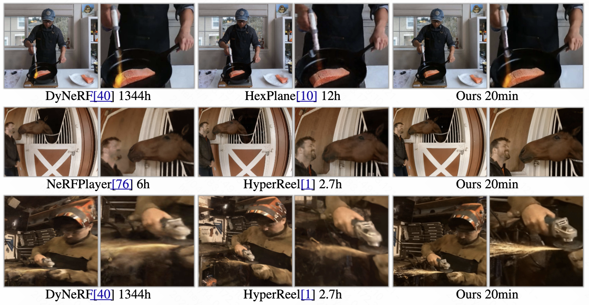
Masked space-time hash encoding for efficient dynamic scene reconstruction

bibtex
@InProceedings{wang2023masked,
author = {Feng Wang and Zilong Chen and Guokang Wang and Yafei Song and Huaping Liu},
title = {Masked space-time hash encoding for efficient dynamic scene reconstruction},
booktitle = {NeurIPS},
year = {2023},
}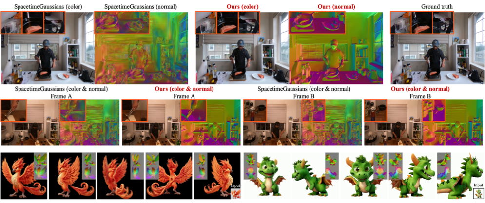
Video4DGen: Enhancing Video and 4D Generation through Mutual Optimization

bibtex
@InProceedings{wang2025video4dgen,
author = {Yikai Wang and Guangce Liu and Xinzhou Wang and Zilong Chen and Jiafang Li and Xin Liang and Fuchun Sun and Jun Zhu},
title = {Video4DGen: Enhancing Video and 4D Generation through Mutual Optimization},
booktitle = {T-PAMI},
year = {2025},
}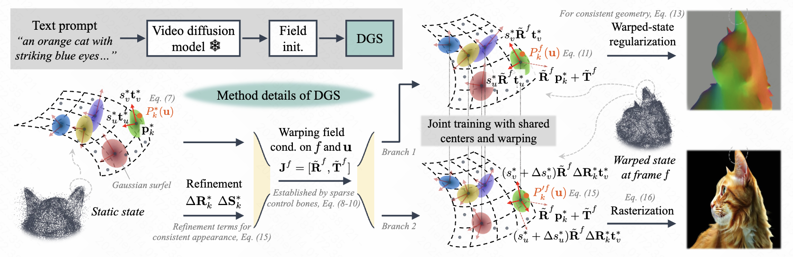
Vidu4d: Single generated video to high-fidelity 4d reconstruction with dynamic gaussian surfels
bibtex
@InProceedings{wang2024vidu4d,
author = {Yikai Wang and Xinzhou Wang and Zilong Chen and Zhengyi Wang and Fuchun Sun and Jun Zhu},
title = {Vidu4d: Single generated video to high-fidelity 4d reconstruction with dynamic gaussian surfels},
booktitle = {NeurIPS},
year = {2024},
}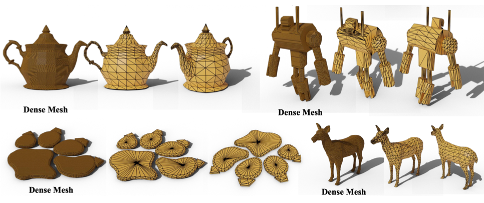
Meshanything v2: Artist-created mesh generation with adjacent mesh tokenization

bibtex
@InProceedings{chen2024meshanything,
author = {Yiwen Chen and Yikai Wang and Yihao Luo and Zhengyi Wang and Zilong Chen and Jun Zhu and Chi Zhang and Guosheng Lin},
title = {Meshanything v2: Artist-created mesh generation with adjacent mesh tokenization},
booktitle = {arxiv},
year = {2024},
}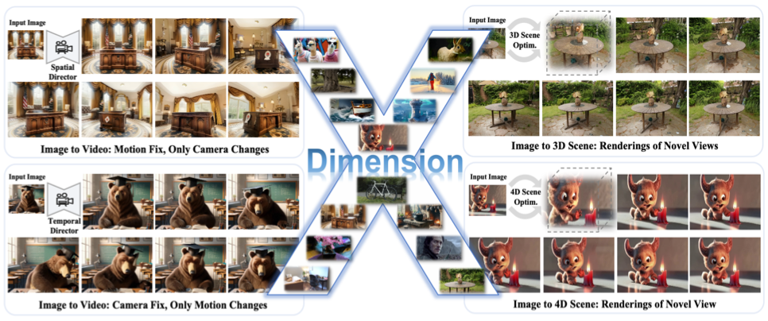
Dimensionx: Create any 3d and 4d scenes from a single image with controllable video diffusion

bibtex
@InProceedings{sun2024dimensionx,
author = {Wenqiang Sun and Shuo Chen and Fangfu Liu and Zilong Chen and Yueqi Duan and Jun Zhang and Yikai Wang},
title = {Dimensionx: Create any 3d and 4d scenes from a single image with controllable video diffusion},
booktitle = {arxiv},
year = {2024},
}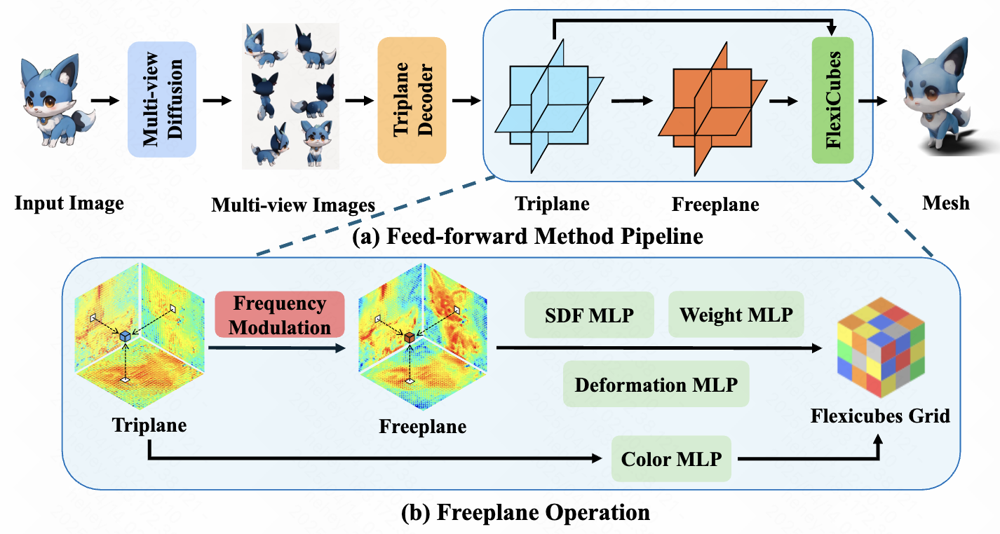
Freeplane: Unlocking Free Lunch in Triplane-Based Sparse-View Reconstruction Models

bibtex
@InProceedings{sun2024freeplane,
author = {Wenqiang Sun and Zhengyi Wang and Shuo Chen and Yikai Wang and Zilong Chen and Jun Zhu and Jun Zhang},
title = {Freeplane: Unlocking Free Lunch in Triplane-Based Sparse-View Reconstruction Models},
booktitle = {arxiv},
year = {2024},
}Open-source projects
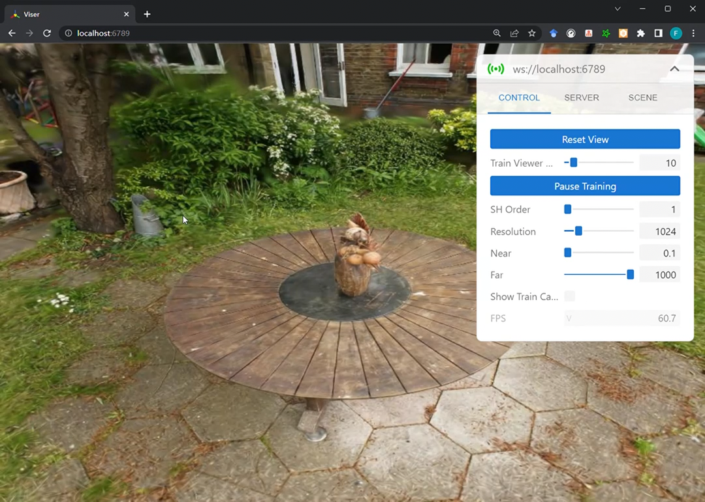
3D Gaussian Splatting
Zilong Chen

bibtex
@InProceedings{chen2023gaussian,
author = {Zilong Chen},
title = {3D Gaussian Splatting},
booktitle = {GitHub open-source project},
year = {2023},
}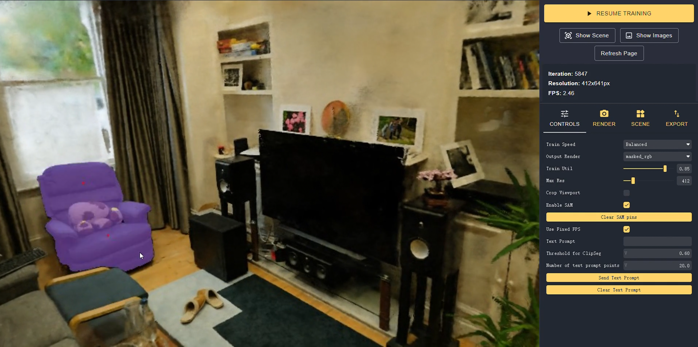
Segment Anything in NeRF
Feng Wang*, Zilong Chen*

bibtex
@InProceedings{chen2023samnerf,
author = {Feng Wang and Zilong Chen},
title = {Segment Anything in NeRF},
booktitle = {GitHub open-source project},
year = {2023},
}Services
Conference reviewer CVPR · NeurIPS · ICLR · ICML · ICCV · AAAI · ACL · IROS · ICRA
Journal reviewer T-PAMI · Neurocomputing · TIP · JMLR
Journal reviewer T-PAMI · Neurocomputing · TIP · JMLR